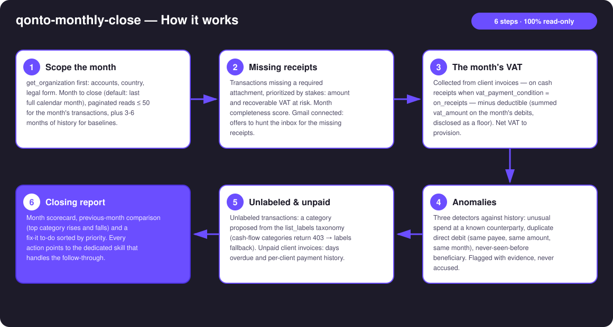
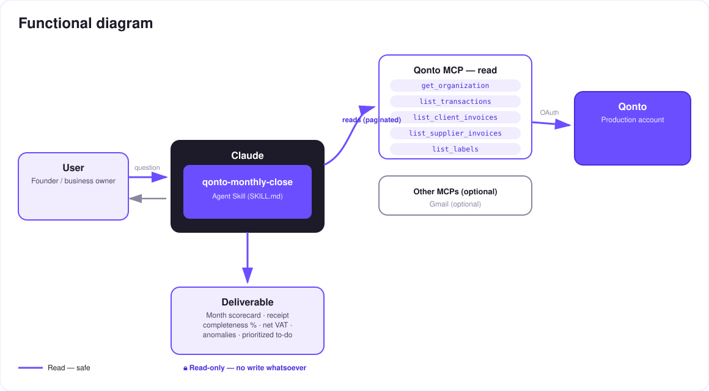

The month-end CFO in 3 minutes. One prompt, the full month reviewed, a prioritized to-do handed back.
Every month-end, small-business owners burn 2–4 hours compiling statements, receipts, VAT and unpaid invoices for their accountant. One prompt — "close my month" — triggers the full review:
Missing receipts ranked by stakes — amount and recoverable VAT at risk — with the month completeness score.
Collected (on cash receipts when on_receipts is detected) − deductible (floor disclosed) = net to provision.
Unusual spend, duplicate direct debit, new beneficiary — flagged with evidence, never accused.
Unlabeled, unpaid, month-over-month comparison → closing report + a P1/P2/P3 fix-it list.
Would someone use this on a Monday morning? It's literally the first Monday of the month, every month.
| Prerequisite | Detail | Required |
|---|---|---|
| Qonto production account | Adapts to any organization — get_organization first, nothing hardcoded | ✅ |
| Country | Receipts, anomalies, unpaid invoices, comparisons: every Qonto country. VAT module: French logic; other countries (DE, ES, IT…) → generic estimate, stated as such | ℹ️ detected |
| Qonto MCP connected | Official connector (claude.ai / Claude Desktop), OAuth login | ✅ |
| ≥ 3 months of history | The anomaly detectors and the comparison need a baseline; below that, honest degradation | ⭕ |
| Gmail MCP | Optional, detected dynamically: hunts the inbox for missing receipts; otherwise the skill says so and continues | ⭕ |

vat_payment_condition: "on_receipts" detected on the invoices → collected VAT follows client payments, not issued invoicesvat_amount, with the count of untagged debits disclosed — and the cost of missing receipts quantified (no invoice = VAT not deductible)list_cash_flow_categories returns 403 on the claude.ai connector → list_labels fallback, handled silentlyemitted_at (1–2 day lag vs settled_at) — no phantom "missing transaction" at month boundaries
Fully read-only: this skill calls no write tool — nothing is created, modified, sent or moved. The report proposes; the user disposes, in the Qonto app or via the dedicated skills. You can run it on any account, any time, with zero side effects.
| Detector | Signature | Evidence shipped |
|---|---|---|
| Unusual spend | A known counterparty whose month total deviates strongly from its baseline (> 2× median), or a lone debit far outside the account's usual range | Amount vs the counterparty's historical median, reference window |
| Duplicate direct debit | Same payee, same amount (±1%), twice or more in the month, as a direct debit — the classic double-billing signature | Both dates, both amounts, the payee's identity |
| New beneficiary | A counterparty never seen in the prior months receiving a meaningful outbound amount | Dated first appearance, amount, absence from history |
qonto-monthly-close is the monthly orchestrator: it detects and prioritizes, read-only. Each finding then has its specialist:
| It detects… | The specialist that acts |
|---|---|
| Missing receipts | qonto-receipt-hunter — chase + upload |
| Unpaid client invoices | qonto-invoice-chaser — dunning drafts |
| VAT to provision | qonto-tax-pilot — tax schedule + SCA-gated provisioning |
| Output | Format | When |
|---|---|---|
| Conversation reply | Markdown tables: scorecard, receipts, VAT, anomalies, comparison, unpaid, to-do | Always — the baseline |
| Closing dashboard | HTML file/artifact: month scorecard, completeness gauge, VAT tile, anomaly cards, to-do checklist | When the host renders files (claude.ai artifacts, Claude Desktop, Claude Code); automatic fallback to tables |
The ≤ 3-minute demo attached to the PR walks through: the month-end chore → one prompt → the live review → the full report landing in one pass ("96 transactions reviewed, 3 missing receipts, 1 duplicate caught, this month's VAT: €717 — here's your 10-minute to-do") → the dashboard. It runs live on a real production account.
| Idea | Effort | Note |
|---|---|---|
| Accountant-ready export (structured PDF) | Low | The content exists, only the firm-friendly layout is missing |
| Closing memory: scorecards compared month after month | Medium | Completeness going up means the books are getting healthy |
| Zombie-subscription detector (recurring direct debit, never labeled, never justified) | Low | Reuses the anomaly baselines |
| Multi-MCP: receipts from Google Drive in addition to Gmail | Low | Same dynamic-detection pattern as Gmail |